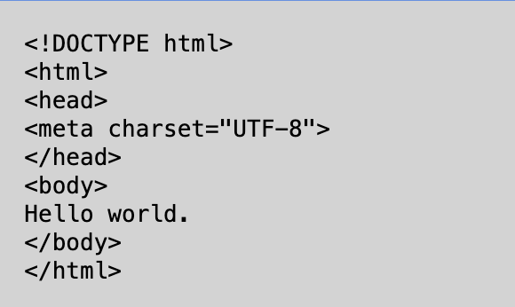

Webteknologier
Jeres projekter skal dokumenteres i en portfolie. Dette gøres ofte med,
- Kort introduktion til ptojektet.
- Teoretiske overvejelser.
- Eksempler på hvordan de teoretiske overvejelser er anvendt i projektet.
- Kodeeksempler som I beskriver grundigt.
Tilbage til hovedsiden
Eksempel på dokumentation af kode
Nedenstående er en den simpleste kode til en hjemmeside indsat som billede:

Imellem header tags, "head" "/head", placeres metadata som browseren skal bruge for at vise siden rigtigt. Her bruges meta charset="UTF-8" så browseren kan skrive æåø rigtigt.
Hvad er internettet?
Internettet går ud på at i stedet for en til en forbindelser, så er det i et Mesh Network hvor masser af server connecter (Decentraliseret). Det kan dermed forbinde alle dem med adgang til et netværk. Internettet bruges fx til at give sin egen viden videre til andre som kan gavne.
VIGTIGT
- Ingen styre det internettet(Net Neutralitet), der er kommet love om man ikke må betale mere for at komme foran i køen på fx Netflix. Så Yousee må fx ikke betale Netflix ekstra for at have hurtigere adgang for deres kunder.
Internettets data bliver sendt via bits, men hvordan?
- elektricitet, kobber
Det billigt men der er signaltab
- lysleder (1 mm bred), ledning med glas i så den reflektere med lysets hastighed
Hurtigt og intet signaltab, dyrt og svært at arbejde med
- Radio, sender til et system hvor det så går videre med ledning
Mobilt men på kort afstand